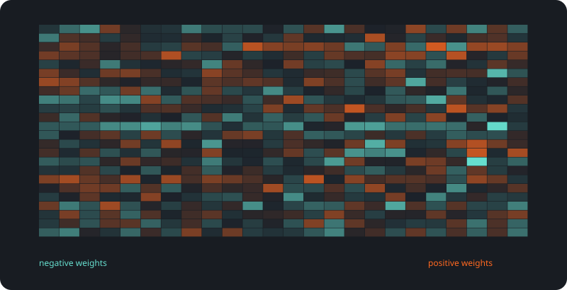
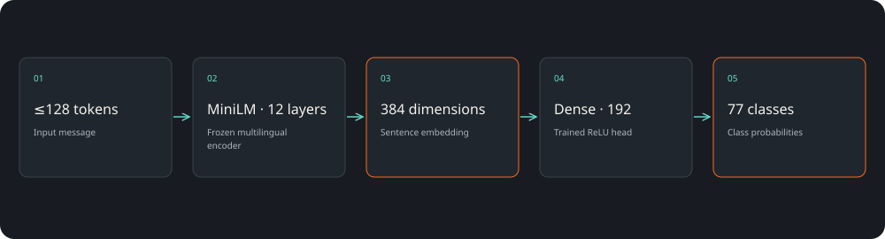
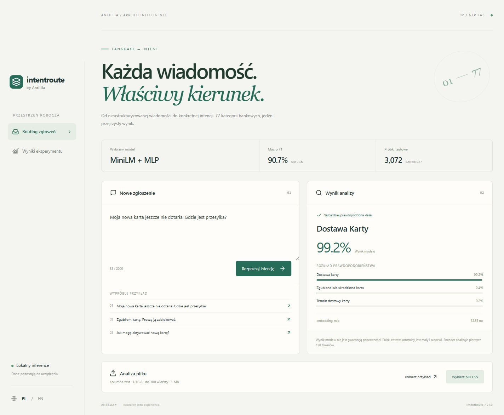

77 intencji
Jedna wiadomość trafia do przejrzystego zestawu kategorii.
Rozumienie zgłoszeń / CASE STUDY 02
Zbudowaliśmy klasyfikator, który odczytuje treść zgłoszenia i wskazuje najbardziej prawdopodobną intencję spośród 77 kategorii bankowych. Z alternatywami i możliwością wstrzymania automatycznej decyzji.
Macro F1 · test angielski
3072 przykładów testowych

SAVED ARTIFACTS / REPRODUCIBLE RESULTSKlienci opisują ten sam problem na różne sposoby. Ręczne sortowanie wiadomości zabiera czas, a sztywne słowa kluczowe gubią kontekst.
Jedna wiadomość trafia do przejrzystego zestawu kategorii.
Model pokazuje alternatywy; niska pewność sygnalizuje potrzebę sprawdzenia.
Do 100 wiadomości naraz, z zachowaniem lokalnego przetwarzania.
3072 przykładów testowych
Macro F1 (%) ↑
Ta ilustracja została wygenerowana z wag lub reprezentacji używanych w projekcie. Ułatwia rozmowę o architekturze, ale sama nie wyjaśnia każdej decyzji modelu.
React · FastAPI · Sentence Transformers · scikit-learn„Moja nowa karta jeszcze nie dotarła. Gdzie jest przesyłka?” → dostawa karty. Interfejs pokazuje także alternatywne intencje i wynik modelu.

Podpowiedź kolejki lub zespołu dla przychodzących zgłoszeń.
Rozkład intencji pomaga zrozumieć dominujące powody kontaktu.
Kategorie są sugestią, a nie nieodwołalną decyzją systemu.
Główne wyniki dotyczą angielskiego BANKING77. Polska kontrola ma 12 autorskich przykładów: accuracy 66,67%. To diagnostyka, nie polski benchmark. Encoder analizuje pierwsze 128 tokenów; pewność nie jest gwarancją poprawności.
BANKING77 · CC BY 4.0 ↗Projekt demonstracyjny zespołu Antillia. Scenariusze zastosowań opisują możliwości adaptacji; nie są deklaracją wdrożenia u klienta.
Pokaż nam problem. Dobierzemy zakres, dane i sposób sprawdzenia rozwiązania.
Omów swój projekt